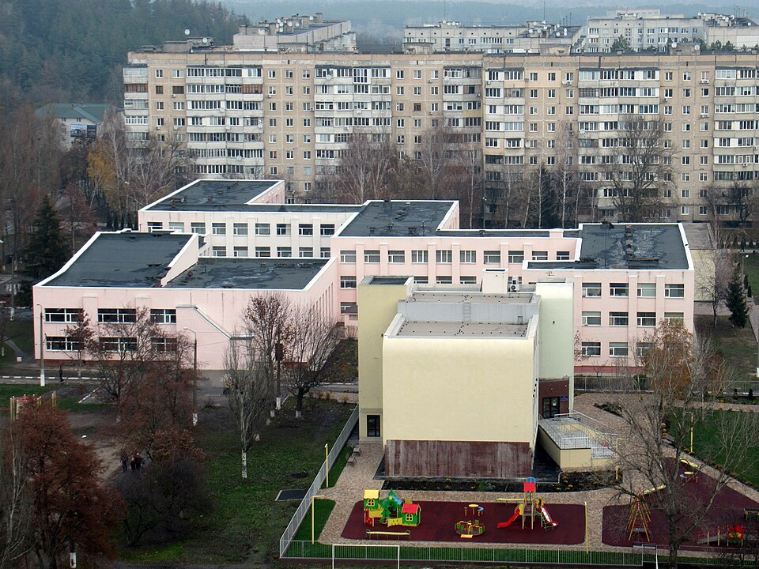

Освіта

Сприяння доступності освіти, координація освітніх програм і підтримка закладів освіти області
Зв’язок із державними органами влади: робота Департаменту освіти і науки у взаємодії з Міністерством освіти і науки України щодо виконання освітніх програм